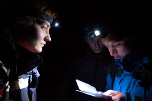

Odjezd na akci
V pátek 25. 10. 2013. Doporučený spoj je vlak s odjezdem 17:20. z Brna. Konkrétnější info půjde již v pondělí 14.10. všem přihlášeným.Volby
V době konání Outdoorvíkendu se konají volby do poslanecké sněmovny parlamentu ČR. V průběhu akce nebude možné volit. Doporučujeme odvolit před odjezdem na akci v Brně. Nejste-li z Brna, budete si pro tuto možnost muset vyřídit voličský průkaz. Více informací o voličském průkazu např. zde.Návrat z akce
V pondělí do 18. hodiny.Místo konání
Bude upřesněno přihlášeným.Cena akce a platba
Cena je 990 Kč a zahrnuje ubytování, stravu po celou dobu akce, náklady na techniku a další vybavení.číslo účtu pro platbu: 2500167471/2010 (FIO)
Variabilní symbol platby uvádějte ve formátu 11301900XX, kde XX je vaše pořadové číslo uvedené v seznamu přihlášených.
Do zprávy pro příjemce uveďte heslo "Outdoor" a vaše příjmení.
Strava
Na akci zajišťují veškerou stravu (kromě páteční večeře) organizátoři z námi nakoupených surovin. Doporučujeme zásobu vlastních sladkostí nebo jiné oblíbené energie.Potřebné vybavení
Podrobný seznam vybavení spolu s dalšími informacemi obdrží všichni zaplacení účastníci cca týden před akcí. Již nyní si však obstarej (kup/půjč) tyto nezbytné věci:- OPRAVDU TEPLÝ spacák, ve kterém víš, že nezmrzneš venku v -10°C (v době akce může i sněžit)
- čelovka + náhradní baterie (dost energie na tři noci)
- buzola
- kvalitní karimatka (určitě NE alumatka)
- kvalitní, pevné, pohodlné boty do terénu
- oblečení, ve kterém se budeš cítit pohodlně v jakémkoliv počasí (doporučujeme nepromokavou bundu nebo aspoň kvalitní pevnou pláštěnku)